Graph / Chart Dataset Samples
保存先: /project/datasets
LineEX
公開リポジトリの sample_input と sample_output から少数サンプルを保存。
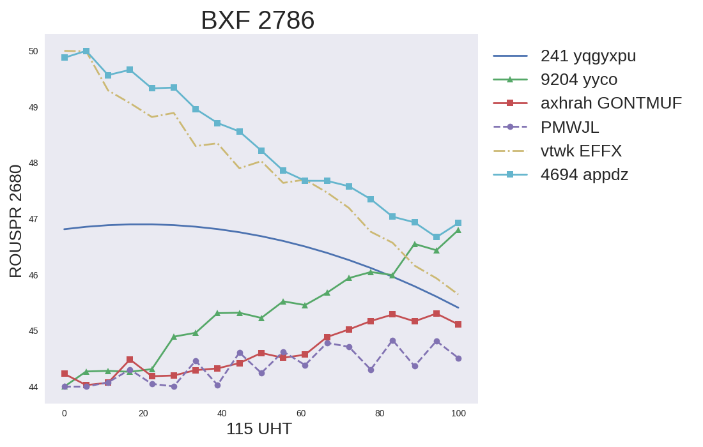
LineEX input sample 0
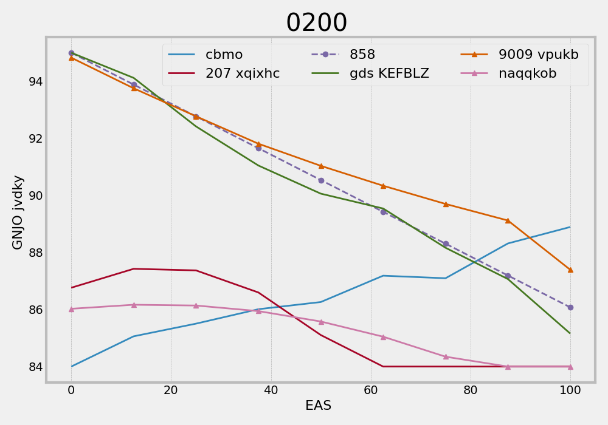
LineEX input sample 1
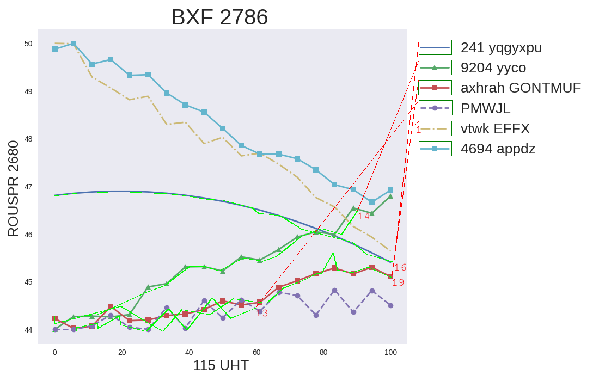
LineEX output example mapped_0.png
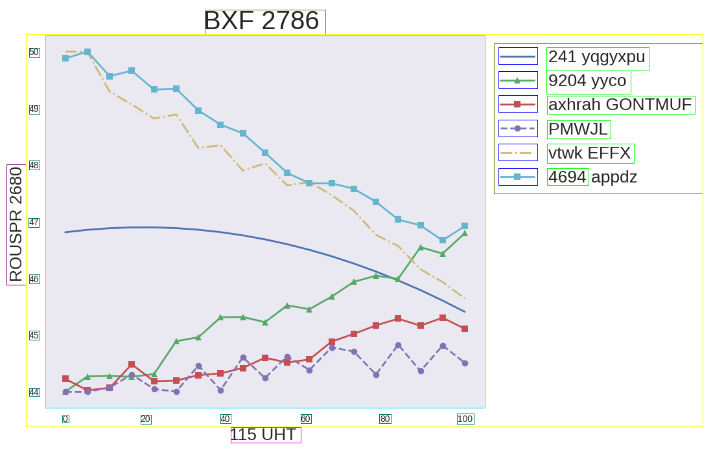
LineEX detection example det_0.png
ExcelChart400K
公式公開先は巨大な配布物（Hugging Face / Drive 上の multi-GB zip）。今回は関連実装 DeepRule / ChartOCR リポジトリに含まれるデモ画像を保存。
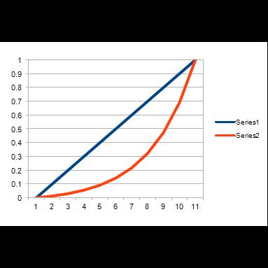
DeepRule / ChartOCR demo image: test.png
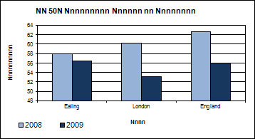
DeepRule / ChartOCR demo output: target.png
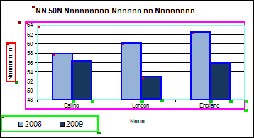
DeepRule / ChartOCR demo overlay: target_draw.png
UB-PMC / CHART-Info
CHART-Info 公式 sample zip UB_PMC_sample_1.21.zip をダウンロードして展開。
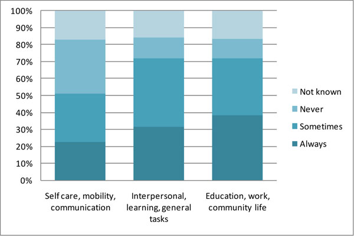
PMC3104219 sample + JSON annotation
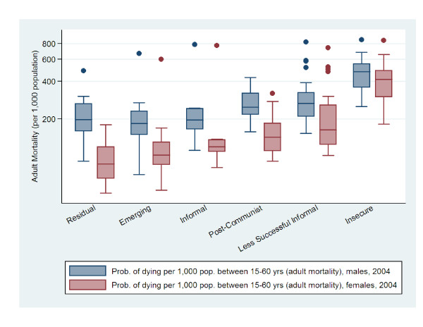
PMC3349504 sample + JSON annotation
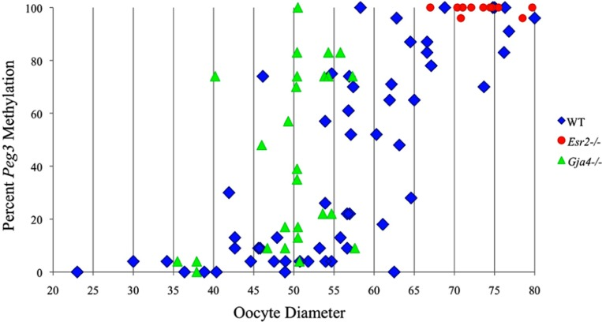
PMC3394371 sample + JSON annotation
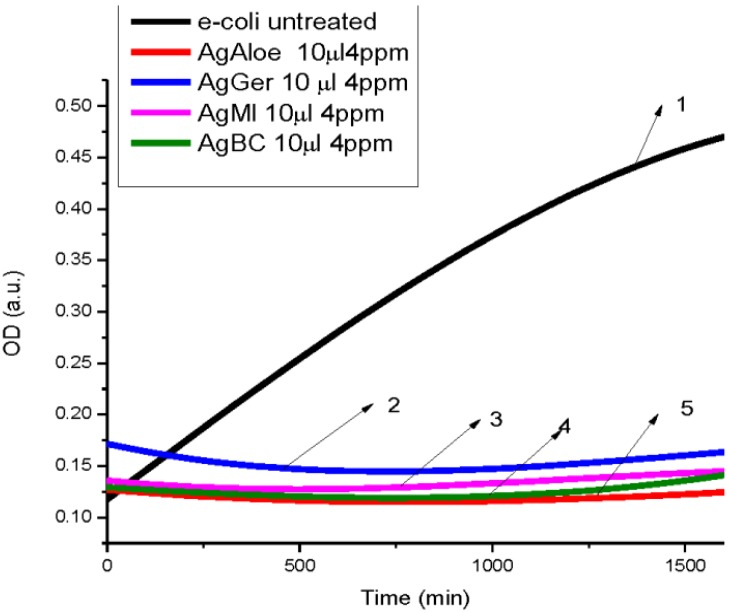
PMC3823307 sample + JSON annotation